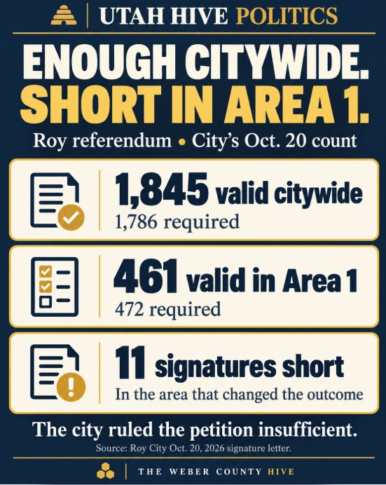
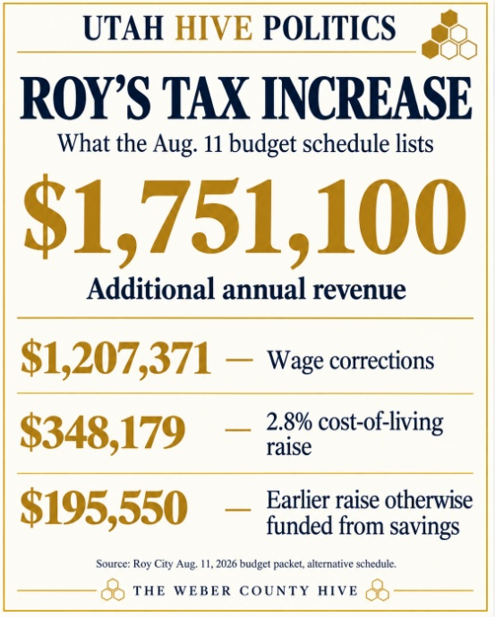
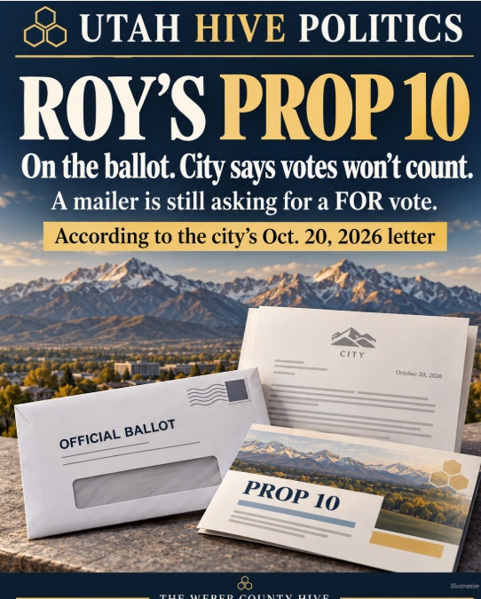

Referendum docket pages (7) · tap to open
- Referendum docketEvery referendum the Hive tracks, searchable
- Eagle Mountain's Second Tax Referendum · plain wordsThe fight over a ballot date and the city's pamphlet
- Eagle Mountain's Finance History · plain wordsWhere the property tax goes before the General Fund
- Roy Prop 10 · plain wordsKeep or reject a $1.75 million tax increase
- Uintah County Prop 9 · plain wordsWhether to replace the county commission
- Two Referendums, Zero Votes · plain wordsBox Elder's Stratos fight and Summit County's Kimball Junction
- The Rules Keep Changing · Part 2 · plain wordsHow Utah's referendum law got harder to use
The short version
- Roy's City Council adopted a 34.25% property-tax increase on Aug. 11, 2026, by a 4-1 vote, mainly to pay for employee raises. It adds $1,749,050 a year.
- The city first proposed 54.94%. Cuts brought it down before the vote.
- Residents started a referendum. Weber County's certified Nov. 3 ballot lists it as Proposition #10. A yes vote keeps the increase; a no vote sends Roy's rate back to its most recent certified rate.
- Update, Oct. 18: sponsors turned in nearly 2,100 signatures on Oct. 8 (FOX 13), and KSL reported Oct. 13 that the Weber County Clerk-Auditor said the petition met the requirements.
- This is Roy's second property-tax referendum in two years. The 2025 petition fell short: 576 valid of 1,743 needed.
- Update, Oct. 23: On Oct. 20 the city ruled the petition insufficient after signers asked to have their names removed. By the city's own counts, 19 signatures came off, 12 of them in the last day. Area 1 went from exactly enough (472 of 472) to 11 short. The citywide count still passed: 1,845 valid against 1,786 needed. Prop 10 is still printed on the ballot, but the city says votes on it will not be counted. Details
- A $195,550 gap became a $1.75 million tax increase. By the city's own numbers, repeal leaves a $195,550 gap. The increase raises $1,751,100 a year, nearly nine times that. About 89% of the new money is new raises. Details
- A "Vote FOR" mailer came from Roy City Citizens, a committee run by former Councilmember Randy Scadden that registered with the state Oct. 22. Councilmember Alexis Jackson, daughter of Weber County Commissioner Sharon Bolos, also urged voters to "vote FOR." Both told voters Roy would lose services. Details
Roy first proposed raising its share of property taxes by 54.94%. After cuts, the council adopted a 34.25% increase on Aug. 11, 2026, by a 4-1 vote, mainly to pay for employee raises. Residents started a referendum to let voters decide. Weber County's certified Nov. 3 ballot lists it as Proposition #10. A yes vote keeps the increase. A no vote sends Roy's rate back to its most recent certified rate. Signature gathering is still under way as of Oct. 1, 2026, so whether the petition gets enough valid signatures is still open.
Update, Oct. 23: The petition was ruled insufficient on Oct. 20 after names were removed. Prop 10 is still printed on your ballot, but the city says those votes will not be counted.
Where This Is
Roy, in southwest Weber County. The gold line is the state; dark lines are counties; the highlighted county is outlined in gold; dashed purple lines are city limits. Zoom in for more labels.
See every Utah referendum the Hive tracks on MAP 006: Citizen Referendums → · Everything on the Nov. 3 ballot: MAP 009 →
1. What the Council Adopted, and Why
Roy posted its Truth in Taxation notice on July 23, 2026. It proposed a 54.94% increase, raising $2,807,745 more a year. On a $439,000 home, Roy's share of the bill would have gone from $388.25 to $601.69. The public hearing was held Aug. 11, 2026, at 6 p.m. at 5051 S. 1900 W.
According to the city's agenda packet, the money pays for three things: covering a shortfall from an employee cost-of-living raise given in March 2026, a 2.8% cost-of-living raise for employees in fiscal year 2027, and wage-correction adjustments for all full-time employees.
At the hearing, staff said cuts, including savings tied to the proposed fire annexation, brought the increase down to about 34.29%. Councilmember Wilson then moved to approve Resolution 26-24 at 34.24%, striking the raise for the council and mayor while keeping the employee raises. The approved minutes record the roll call:
| Council member | Vote on Resolution 26-24 |
|---|---|
| Janel Hulbert | Aye |
| Alexis Jackson | Aye |
| Bryon Saxton | Nay |
| Jason Sphar | Aye (seconded) |
| Diane Wilson | Aye (made the motion) |
The minutes list surnames only; first names come from the Standard-Examiner's report. Mayor Ann Jackson is a different person from Councilmember Alexis Jackson. The mayor did not vote; the minutes record her saying she never supported the original roughly 55% proposal.
2. What Your Vote Does
Your Prop 10 vote, in one picture
flowchart TD
Q{"Prop 10:
keep the $1,749,050
increase?"}
Q -- "YES wins" --> Y["Increase stays;
it sets the base
for next year"]
Q -- "NO wins" --> N["Rate goes back
to the most recent
certified rate"]
This follows Utah Code § 20A-7-613, the section that governs property-tax referendums. The Hive read a summarized extraction of that section, not the full text of every subsection; the city's own explanation is the best source for exactly how a result would affect the current year's bills.
3. The Petition: What the Records Show So Far
How a property-tax referendum reaches the ballot
flowchart TD A["Council adopts
increase
Aug. 11, 2026"] --> B["Residents file
and gather
signatures"] B --> C["Signatures due
(news: Oct. 8)"] C --> D{"Enough valid
signatures?"} D -- "Yes" --> E["Voters decide
Nov. 3, 2026"] D -- "No" --> F["Petition fails;
increase stands"]
Proposition #10 stays on the Nov. 3 ballot, and ballots began going out Oct. 13. City Manager Matt Andrews told KSL the city "will remain neutral on the question." Councilmember Alexis Jackson told FOX 13 that cuts would follow if the increase fails. KSL put the revenue at stake at about $1.75 million, which matches the city's $1,749,050 figure.
News reports name Nancy Inman, Ty Chaston and Geoffrey Cox as organizers. KSL reported about 1,800 signatures were needed; FOX 13 reported about 1,700. KSL also reported Councilwoman Janel Hulbert said a referendum election would cost the city about $50,000.
4. Last Year's Attempt
This is Roy's second property-tax referendum in two years. In 2025 the council adopted an increase (Resolution 25-24 / Ordinance 25-25, Aug. 19, 2025) to raise $1,423,978. A referendum petition was filed Aug. 25, 2025. It needed 1,743 signatures; 714 were turned in and 576 were found valid. The City Recorder declared it insufficient on Oct. 27, 2025.
Separately, KSL reported that the State Tax Commission denied Roy's 2025 increase because the city had not posted other Weber County entities' proposed increases, as new guidelines required. The Standard-Examiner reported that denial left the budget gap behind this year's proposal.
- Aug. 19, 2025Council adopts the 2025 increase ($1,423,978).
- Aug. 25, 20252025 referendum petition received.
- Oct. 2025State Tax Commission denies the 2025 increase (news).
- Oct. 27, 20252025 petition declared insufficient: 576 valid of 1,743 needed.
- July 23, 2026Roy posts its 2026 notice: 54.94% proposed.
- Aug. 11, 2026Council adopts 34.25%, 4-1.
- Sept. 3, 2026Weber County certifies the Nov. 3 ballot listing Prop #10.
- Oct. 1, 2026Signature gathering under way.
- Oct. 8, 2026Signature deadline (news). Sponsors turn in nearly 2,100 signatures (FOX 13).
- Oct. 13, 2026County Clerk-Auditor says the petition met the requirements (KSL). Ballots begin mailing.
- Oct. 14, 2026City letter: sufficient. 2,104 signatures, 1,878 valid.
- Oct. 15, 2026Ballots printed with Prop 10 (FOX 13).
- Oct. 19, 2026City: still sufficient. 2,097 signatures, 1,857 valid.
- Oct. 20, 2026City letter: insufficient after signature withdrawals. 2,085 signatures, 1,845 valid.
- Oct. 22, 2026Roy City Citizens registers with the state, position "For."
- About Oct. 30, 2026Last day for a voter to ask a court to find the petition sufficient (10 days after Oct. 20).
- Nov. 3, 2026Election Day.
Roy's increase is also on MAP 002, Who's Raising Taxes This Year, and the fire-district change mentioned at the hearing is covered in A New Line on the Bill.
5. Oct. 14 to Oct. 20: Sufficient, Then Not

Roy is a third-class city. Under Utah Code § 20A-7-601, a referendum there needs signatures from 10% of active voters citywide and 10% in at least three of the city's four voter participation areas. Weber County Clerk-Auditor Ricky Hatch's office checks each signature against the voter rolls (Utah Code § 20A-1-1002). The Roy City Recorder declares the result.
What happened in six days
flowchart TD A["Oct. 14
City: SUFFICIENT
Area 1: 478 of 472"] --> B["Oct. 15
Ballots printed
with Prop 10"] B --> C["Oct. 19
Still SUFFICIENT
Area 1: 472 of 472"] C --> D["Oct. 20
12 more names off
Area 1: 461 of 472"] D --> E["City: INSUFFICIENT
Prop 10 stays printed;
city says votes won't count"]
| Area | Needed | Oct. 14 | Oct. 19 | Oct. 20 |
|---|---|---|---|---|
| Area 1 (north) | 472 | 478 | 472 | 461 — 11 short |
| Area 2 (east) | 423 | 335 | 329 | 328 — never met |
| Area 3 (south) | 435 | 570 | 564 | 564 — met |
| Area 4 (west) | 470 | 495 | 492 | 492 — met |
| Citywide | 1,786 | 1,878 | 1,857 | 1,845 — met |
Roy's four voter participation areas on Oct. 20 (simplified sketch)
This is a simplified sketch, not to scale. The real lines follow voting precincts: Area 1 is precincts 29RY01–06; Area 2 is 29RY07, 08, 12, 13, 14 and 18; Area 3 is 29RY17, 20, 21, 22 and 23; Area 4 is 29RY09, 10, 11, 15, 16 and 19. The city's official map is Exhibit A of Resolution 26-27, page 21 of the Oct. 6, 2026 council packet. Counts are from the city's Oct. 20 letter.
6. Where the Money Goes: The $195,550 Number

$195,550 is the gap the city itself says a repeal would leave. The increase the council adopted raises $1,751,100 a year, nearly nine times that gap. The difference is new raises. Voters were told Roy would lose more than $1 million in services.
The increase raises $1,751,100 a year. The city's budget schedule (Aug. 11, 2026 packet, page 9) splits it three ways:
About 89% of the new money is new raises. The other 11% covers the 2.5% raise employees already got in March 2026, which left the gap. Every dollar goes to employee pay.
No Utah law requires a city to give raises. The council sets pay itself, by ordinance and budget (Utah Code § 10-3-818). These raises are a choice the council made. If the increase were repealed, the council would close the $195,550 gap, then decide whether to pay for the raises by cutting services, pay for part of them, or wait. Losing "over $1 million" in services happens only if the council chooses to pay for the full raises anyway.
The city's argument says Roy wages run "on average, 14% below median wages in surrounding cities." The Hive has not found the study behind that number. In the Aug. 19, 2025 minutes, then-Mayor Robert Dandoy said the 14% estimate came from a salary survey that was "only a draft." At a June 9, 2026 work session, Councilmember Jackson said the original 55% rate "had been calculated specifically to get City employees up to an average wage."
Utah's Truth in Taxation law (§ 59-2-919) requires a city to state the purpose of a tax increase and explain its reasons at the hearing. It does not require a study or data to back those reasons up. A 34% increase was passed on a number the public has never seen the source for.
What it adds up to on your bill (average $439,000 Roy home)
| Item | Per year | Per month |
|---|---|---|
| Roy's share before the increase | $388.25 | $32.35 |
| Roy's share with Prop 10's increase | $521.23 | $43.44 |
| Prop 10 increase alone | +$132.98 | +$11.08 |
| Weber Fire District's new tax (district estimate) | +$314.13 | +$26.18 |
| Roy share + fire district, before Roy's required cut | $835.36 | $69.61 |
| Change from today, before Roy's required cut | +$447.11 | +$37.26 |
The fire district's tax alone is more than twice Prop 10's $11. The district's Oct. 1 hearing presentation says its estimates do not include the rate cut Roy is required to make (the written hearing notice itself doesn't mention the cut), and Roy hasn't published that number. (Corrected Oct. 24, 2026: this sentence first said the notice made that point.) So $37 a month is the top of the range before that cut, not the final figure, and voters are being asked about Prop 10 without the net number in front of them.
Roy's own 1900 Southeast Community Reinvestment Area (about 67 acres east of 1900 West, approved October 2023). Its plan directs about $24.92 million in tax growth over 20 years to development in the area, including about $3.85 million of Roy's own share: about $192,500 a year on average, almost the same as the $195,550 gap. One deal so far: up to $1,069,230 for Echelon Development's extended-stay hotel (Roy RDA, March 19, 2024). This money is restricted to the area's plan and can't pay for raises, but Roy's elected council, sitting as the agency board, decides how it is spent.
MIDA's Falcon Hill Project Area, partly inside Roy. MIDA's own 2021 plan says the 529-acre area "is located in Davis County, Weber County, Clearfield City, Riverdale City, Roy City, and Sunset City," and lets MIDA keep 75% of the property taxes there for up to 40 years. Its map shows the north end reaching up to 5600 South (SR-97) near the Roy Gate; the map shows no city lines, so how many acres are in Roy isn't stated. Home to Northrop Grumman's regional headquarters for the Sentinel ICBM program: four buildings of about 900,000 square feet finished 2020–2022. MIDA says it "played a key role with coordinating incentives." Falcon Hill brought in about $8.9 million in fiscal 2025, and MIDA shared $300,000 with six local governments. MIDA's board is appointed, not elected by Roy voters. Weber County Commissioner Gage Froerer has held a MIDA board seat since 2019 (the Hive's Sept. 8, 2026 MIDA board piece; MIDA agendas list "Commissioner" Froerer), so a sitting county commissioner helps decide how Falcon Hill's tax growth is spent while the county is one of the taxing entities sharing it. Falcon Hill also had its own special assessment bonds (Falcon Hill Assessment Area, Series 2017), which MIDA's board voted on April 24, 2026 to pay off about six years early, with Froerer seconding.
The "but for" question. Tax-increment zones are justified by the claim that development wouldn't happen "but for" the tax break. Falcon Hill sits next to Hill Air Force Base, where the Air Force's Sentinel ICBM program office is based. The Hive found no "but for" analysis for Falcon Hill in the MIDA documents it read; the closest the 2021 plan comes is saying MIDA's authority "will be needed to develop the Project Area." MIDA's plan also says the base itself is "tax exempt" and that Falcon Hill created "the ability to tax previously nontaxable property." But Utah already taxes private businesses that use tax-exempt land, including federal land, through the privilege tax (Utah Code 59-4-101). Companies leasing base land for profit could be taxed under that law without MIDA, with the money going to the regular taxing entities. Under MIDA, 75% of the property tax there goes to MIDA for up to 40 years, decided by an appointed board, instead of to the cities, county, schools and fire district through their own elected boards. The Air Force didn't need MIDA to lease the land. Federal law lets the military lease base land to private developers on its own (10 U.S.C. 2667), and the same law says a private company's leasehold interest "may be taxed by State or local governments." Cities and counties already provide land-use approvals and services everywhere else. What MIDA changed is who decides and who keeps the new tax: a state board appointed by the governor and legislative leaders, rather than the cities and county residents elect. The legislators writing MIDA's rules have also sat on its board. Sen. Jerry Stevenson, MIDA's co-chair "since the organization was formed" in 2007 (his 2017 Association of Defense Communities bio, which says he "pushed for additional MIDA legislation every year since 2010"), was the Senate sponsor of MIDA amendment bills in 2014 (S.B. 45), 2017 (S.B. 178), 2021 (S.B. 233) and 2023 (S.B. 20). Senate President Stuart Adams chairs MIDA's board today. The Hive has covered MIDA's growth bill by bill: The Foundation (S.B. 233, 2021), The Backfill (S.B. 169, 2024), A Stadium-Shaped Loophole (S.B. 333), Eight Project Areas, The Seats That Move.
The city's Oct. 20 letter puts the new money at about $1,749,050; the budget packet says $1,751,100. The $2,050 difference isn't explained in the records read.
7. The "Vote FOR" Mailer and Who Sent It

The mailer reads "Vote FOR Roy City Ballot Proposition #10" and "Paid for by Roy City Citizens, Roy, UT 84067." Roy City Citizens registered with the state on Oct. 22, 2026 as a political issues committee. Its officers are former Councilmember Randy Scadden (also treasurer) and Ashlyn Scadden. Its position: For. Its filing calls Prop 10 a "Ballot Initiative"; it is a referendum.
Utah law requires a group to register within seven days of raising or spending $750 or more on a ballot measure (§ 20A-11-801). As of Oct. 23 at 5:07 p.m., its contribution report showed no contributions. Its first money report will show who paid for the mailer and when.
Randy Scadden's record: Roy City Council, January 2022 to January 2026. Voted aye on the 2025 28% increase (Aug. 19, 2025). Lost the 2025 council primary to Alexis Jackson, 926 to 843. Applied for an open council seat in February 2026; the council appointed Jason Sphar. Appointed alternate Planning Commissioner by this council on Sept. 1, 2026, term to June 30, 2030. The state pay database (Transparent Utah) lists no Roy City employee record for Randy or Ashlyn Scadden; the raises go to city employees.
| Mailer says | What the records show | Rating |
|---|---|---|
| About $11 a month | City: $11.08 a month; budget packet: $11.10, on a $439,000 home | Matches |
| A rate change of "+0.000874" | The adopted rate is .002159, up from .001608: a change of +0.000551. The mailer's number is close to the original 55% plan (+0.000884). At +0.000874, a $439,000 home would pay about $17.59 a month, not $11. | Doesn't match |
| "$1.7 million of services" | $1,751,100 is new revenue, and about 89% of it is new raises. It is not the cost of the services listed. | Not what the city's numbers show |
| Protects "Safe Drinking Water" | Water and sewer are a separate utility fund paid by water bills, with their own rate increase. Property tax goes to the general fund. | Not supported |
| Fire department changes | Matches the $917,195 fire reduction in the budget packet. The mailer doesn't mention the separate Weber Fire District tax, about $314 a year for a typical home starting in 2027. | Matches, missing a cost |
8. A Council Member's Case for "FOR," Checked
In mid-October, after the city said the petition qualified and before it ruled it insufficient, Councilmember Alexis Jackson posted on her "Elect Alexis Jackson" campaign page: "Make yourself heard. Register. And vote FOR the referendum." Elected officials may campaign on ballot measures (§ 20A-11-1206(4)).
| She said | What the records show | Rating |
|---|---|---|
| "$11.08/month" | City: $11.08 a month ($132.99 a year) on a $439,000 home | Matches |
| Raises for "all full-time employees who are paid under average" | The city's notice says "wage correction adjustments to all full-time employees," not only those under average. | Partly |
| "Removing over $1 million worth of services in order to retain a sufficient workforce" if it fails | The city says repeal leaves about a $195,550 gap. The other $1.56 million is new raises. | Not what the city's numbers show |
| The "fat-trimming" has "now even been completed" | The city says operating costs were cut 7.5% in fiscal 2025. June 9 minutes show a skipped street-pole painting (about $80,000) and donor-paid fireworks. No record found lists the full set of cuts or their total. | Partly documented |
| If it fails, "Cuts approaching $2 million are sure to be felt and seen" | The whole increase is $1,751,100, less than $2 million. The city's own figure for the gap a repeal leaves is $195,550. | Not what the city's numbers show |
| Garbage pickup could be cut ("Everything will be on the table"); Roy would be "left with minimal policing and sewer" | Garbage is paid from a separate utility fund through customers' bills: Solid Waste $3,624,974 (Res. 26-24 budget). Sewer is in the Water & Sewer fund ($13,426,500), also paid through bills. Not property tax. | Garbage: not supported |
| Snow plowing at risk | Street work is paid partly by the state's Class C road money ($2,050,000), which must go to roads, and partly by the general fund. | Partly |
| Aquatic Center, Recreation Complex, parks at risk | General-fund departments: Aquatic Center $979,452; Recreation Complex $946,870; Parks & Recreation $1,741,824. | Possible |
In the same post, she called that list "things that cities truly are not required to provide." Her list of services at risk closely matches the Roy City Citizens mailer, and both use $11.08. A sitting council member and a committee run by a former council member are telling voters the same thing. Who wrote either one isn't in the public record yet.
9. The Salary Survey Behind the "14%"
Roy released its salary survey under a public records request, and a tip came in with it. It is one printed page titled "ROY CITY · SALARY SURVEY FALL 2024": 81 Roy job rows, the hourly pay for a matching job in up to 12 cities (Bountiful, Centerville, Clearfield, Clinton, Kaysville, Layton, North Ogden, Ogden, Pleasant View, Riverdale, South Ogden and Syracuse), an average, Roy's pay and the gap. Its source line says "TechNet." It says the City Council picked the cities.
See every row, large print and sortable → Read the story →
- It measures from Roy's pay. If Roy pays $100 and others average $114, that's "14%." As a share of what the other cities pay, Roy is about 12% lower.
- Every job title counts the same. No headcounts. IT Supervisor (+44.41%) counts as much as Police Officer (+3.80%).
- 12 rows have no other city to compare, or only one. Their gaps were set by rule, like "5% above Janitor I."
- 25 rows use a figure shared across departments "to keep depts uniform." Those rows average a 16.5% gap; the 48 rows that use their own city comparison average 13.5%.
- The gray cells don't always follow the sheet's own 20% rule, but applying it evenly moves the total only from 14.11% to 14.18%.
- The city's argument says "median"; the sheet uses averages. Medians give about 14.3%, so the wording doesn't change the result.
- The comparison cities decide a lot. Ogden averages 24.3% over Roy and North Ogden 26.0%; Clinton 2.1% and Pleasant View 4.1%.
- Two dates. City data "gathered Fall 2024 and compared to Roy City as of the same time," but "Roy wages are as of July 1, 2025."
Where the raises go. In the plan the council adopted, the $1,207,371 in "wage correction" raises is split across 13 general-fund departments. The largest share, $488,257 (40%), is Police & Animal Services. On the sheet, the police jobs with the smallest gaps are Police Officer (+3.80%) and Master Officer (+3.79%). The sheet doesn't show how many officers there are or how the $488,257 was divided. Fire is no longer in the adopted plan: the original schedule had Fire at $133,344 (cost-of-living raise) and $663,530 (wage corrections), and the alternative schedule removed it as a "Reduction of Fire Department"; Roy's fire service is set to move to the Weber Fire District. The survey's eight fire rows average 15.4%; without them the sheet averages 14.0% (Roy City Aug. 11, 2026 packet).
Who made it. The sheet doesn't name its authors. As Section 6 shows, in August 2025 then-Mayor Dandoy questioned how the data was compiled, then-Councilmember Scadden recommended a professional survey, and Dandoy called the survey "only a draft." This sheet has no "draft" label. The Hive found no record that a professional survey was done.
How 14% became 34%. The 14% is the pay gap; the 34% is the property-tax increase that pays for the raises. Roy's property tax brings in about $5.1 million a year, so the $1,207,371 in wage corrections alone is 23.65% of it. Add the 2.8% cost-of-living raise ($348,179, 6.82%) and the March 2026 raise already given ($195,550, 3.83%), and the total is 34.29% (Aug. 11, 2026 packet).
Retirement is not in the survey. The sheet compares wages only. In the year ended June 30, 2025, Roy paid $2,023,991 into state pensions (employees paid $308,356) and $106,740 into employee 401(k)s (employees paid $53,624). For most longtime employees the city pays 16.97% of pay into the pension and the employee pays nothing; for newer employees in the 401(k)-only option, the city pays 10% of pay into their 401(k) (14% for police and fire) (Roy City FY2025 audited financial report, Note 4).
Weighted by Roy's payroll. Matching Roy's fiscal 2026 full-time pay records on Transparent Utah to the survey rows, the gap is 13.0% when each job is weighted by how many people hold it (12.4% without fire). For sworn police, the largest group, it is 6.6%. Roy's records show $13,746,947 in wages and $6,051,776 in benefits for fiscal 2026.
The separate hearing on top officials' raises. Utah Code 10-3-818(2) requires a separate, noticed public hearing before a final budget with raises for the city manager, attorney, department heads and deputies is adopted. The final budget passed Aug. 11 with one public hearing, on the budget and tax increase. A separate hearing on Ordinance 26-15, "Enacting Compensation Increases for Specific City Officers," was set for Oct. 20; Roy posted its notice Oct. 8, 12 days ahead. Roy held these hearings in June 2024 and June 2025, before those budgets; the Hive found none in June 2026. Its Exhibit A lists merit increases of up to 2.5% and 3.75% only, not the 2.8% cost-of-living raise or wage corrections. It says mayor pay stays at $13,804 and council pay at $9,364. Whether it passed isn't posted yet.
Who pays less than Roy. No city on the list pays less overall, but in 65 of the sheet's 449 job-by-job comparisons, the other city pays less. Of the 34 gray cells the city left out of its averages, 13 were cities paying less than Roy. On the City Manager row, the only two cities paying less (Clinton and Pleasant View) were both left out. Only four of the 12 cities are near Roy's size of about 39,000 people (2020 Census); Ogden and Layton are about twice as big, and half are under 25,000.
People in This Record
| Person | Role in this record | Why they're connected | Also in the Hive |
|---|---|---|---|
| Diane Wilson, Jason Sphar, Alexis Jackson, Janel Hulbert | Roy City Council | Voted for Resolution 26-24 (Wilson moved, Sphar seconded) | None found |
| Bryon Saxton | Roy City Council | Voted against Resolution 26-24 | None found |
| Mayor Ann Jackson | Roy mayor | Did not vote; said she never supported the original 55% proposal | None found |
| Brittany Fowers | Roy City Recorder | Signed the 2025 notice declaring that year's petition insufficient. Update Oct. 23: also signed the Oct. 20, 2026 letter ruling this petition insufficient | None found |
| Matt Andrews | Roy City Manager | KSL's source on why the Tax Commission denied the 2025 increase | None found |
| Nancy Inman, Ty Chaston, Geoffrey Cox | 2026 referendum organizers (news reports) | Named by KSL and FOX 13 as organizing the petition | None found |
| Kelley Price, Broc Evans, Brooke Evans, Gary Scheuneman, Cameron Hooper | 2025 referendum sponsors | Listed in Roy's 2025 proposition pamphlet | None found |
| Rep. Mike Schultz | Speaker of the House; House District 12 (Roy and Hooper) | Represents most of Roy in the Legislature, which writes Truth in Taxation and referendum law | HD-12: Graff vs. Schultz |
| HD-9 and HD-11 candidates | Districts that cover smaller parts of Roy (approximate) | Parts of Roy fall in House Districts 9 and 11, based on the Hive's overlay of Census city lines on the 2022 district maps | HD-9 · HD-11 |
| Alexis Jackson (added Oct. 23) | Roy City Council | Urged voters to "vote FOR the referendum" on her campaign page in mid-October. Daughter of Commissioner Sharon Bolos, per the commissioner's own public posts; not mentioned in the city or county record | None found |
| Sharon Bolos | Weber County Commissioner (leaves office Jan. 2027) | Councilmember Jackson's mother; shared her daughter's hearing post on the day of the vote. The county commission did not vote on Roy's budget or count signatures | Before You Vote for Sharon Bolos (Substack, June 2) |
| Randy Scadden | Former Roy council member (2022–Jan. 2026); alternate Planning Commissioner since Sept. 1, 2026 | Voted for the 2025 28% increase; officer and treasurer of Roy City Citizens, the committee behind the "Vote FOR" mailer | None found |
| Ashlyn Scadden | Officer, Roy City Citizens | Listed on the committee's Oct. 22 state filing | None found |
| Ricky Hatch | Weber County Clerk-Auditor | His office checks petition signatures and removal requests against the voter rolls | None found |
| Gage Froerer | Weber County Commissioner; MIDA board member since 2019 | Helps decide how MIDA's Falcon Hill tax growth, partly inside Roy, is spent; seconded the April 24, 2026 payoff of the Falcon Hill assessment bonds | Who Picks MIDA's Board? |
| Sen. Jerry Stevenson | State senator; MIDA co-chair since 2007 (vice chair per 2026 MIDA agendas) | Senate sponsor of MIDA amendment bills in 2014, 2017, 2021 and 2023 while serving on MIDA's board | The Layton Shuffle · The Backfill |
| Senate President Stuart Adams | MIDA board chair | Chairs the board that keeps 75% of Falcon Hill's property tax growth. His own 2026 state disclosure form lists ownership, income and stock interests in Roy Medical Building LLC and Roy Medical Center LLC. No record found connects those companies to Falcon Hill or Roy's tax increase | The Seats That Move |
| Deanne Chaston | 2026 referendum sponsor | Listed as a sponsor in the city's Oct. 20 letter, with Ty Chaston | None found |
What's Confirmed, What Isn't
| Item | Status |
|---|---|
| Prop #10 wording on Weber County's certified sample ballot | ConfirmedConfirmed — county sample ballot |
| Resolution 26-24 adopted Aug. 11, 2026, 4-1, with the roll call shown | Confirmed — approved minutes |
| $1,749,050 equals a 34.25% increase over $5,106,044 | ConfirmedConfirmed — Hive math on city figures |
| Signature gathering is under way | Under way as of Oct. 1, 2026 |
| The 2026 petition has enough valid signatures | Ruled insufficient Oct. 20Update Oct. 23: the city ruled it insufficient on Oct. 20 after signature withdrawals (1,845 valid citywide, enough; Areas 1 and 2 short). Earlier status, Oct. 18: met requirements, per Weber County Clerk-Auditor Ricky Hatch (KSL, Oct. 13, 2026). Earlier status, Oct. 1: still open, deadline Oct. 8 (news). An official verified count was not found in the records read. |
| Organizer names and signature targets | News reports only |
| Exact final adopted tax rate (decimal) | Not found in records readUpdate Oct. 23: the Aug. 11 packet's alternative schedule shows .002159, up from .001608. The final certified decimal was not found. |
| 19 signatures came off between Oct. 14 and Oct. 20 | From the city's totalsThe city's letters give totals, not a withdrawal count. |
| Resolution 26-27 (new voter participation areas) was adopted Oct. 6 | Not confirmedPacket shows blank vote lines; minutes not posted yet. |
| Who paid for the "Vote FOR" mailer | Not reported yetRoy City Citizens showed no contributions as of Oct. 23, 5:07 p.m. |
| Source of the city's "14% below" wage figure | Found Oct. 27"Salary Survey Fall 2024," released under a records request; its 81 gaps average 14.1%. See Section 9. Earlier status: Not found. Called a "draft" survey in the Aug. 19, 2025 minutes. |
| Councilmember Jackson is Commissioner Bolos's daughter | ConfirmedCommissioner Bolos's own public Facebook posts. |
Updates since this was posted
Changes and new records since this page was first posted, with dates.
- Oct. 8, 2026Sponsors turned in nearly 2,100 signatures to the Weber County Clerk's office, according to FOX 13.Source: FOX 13, Oct. 15, 2026
- Oct. 13, 2026KSL reported that Weber County Clerk-Auditor Ricky Hatch said the petitioners "met the requirements." Prop 10 stays on the Nov. 3 ballot. See Section 3.Source: KSL.com, Oct. 13, 2026
- Oct. 18, 2026This page was moved to the Hive's standard layout: larger print, a short version, words to know, connected work and a plain-words version. No earlier text or figures were removed. Long status labels were shortened, with their full original wording kept beneath each label.
- Oct. 20, 2026The city ruled the petition insufficient after signature withdrawals. Prop 10 stays printed on the ballot; the city says votes on it will not be counted. See Section 5.Source: Roy City letter, Oct. 20, 2026
- Oct. 22, 2026Roy City Citizens, run by former Councilmember Randy Scadden, registered as a political issues committee supporting Prop 10. See Section 7.Source: disclosures.utah.gov
- Oct. 23, 2026Changed the page title from "Roy Prop 10: Voters Are Asked to Keep or Reject a $1.75 Million Tax Increase" and updated the summary under it, which had said "Residents are gathering signatures right now for a referendum on it." Added Sections 5 through 8: the six days from sufficient to insufficient, the area map, where the money goes (including the draft salary survey, the fire move, what it adds up to on your bill, Roy's audited savings and debt, and where Roy's tax growth goes), the mailer check and Councilmember Jackson's claims check. Added people and questions. No earlier text or figures were removed; earlier status wording is kept beneath the updated labels.
- Oct. 24, 2026Correction: the bill section said the Weber Fire District's hearing notice states its estimate leaves out Roy's required rate cut. The written notice doesn't mention the cut; the district's Oct. 1 hearing presentation does. The sentence now says so. Added: state law says Roy's certified tax rate "shall be decreased" in the first budget year after it joins the district, by the revenue it budgeted for fire protection, paramedic and emergency services the prior fiscal year. Roy's budget book shows Fire & Rescue at $6,052,221 in the FY2026 budget and $7,027,895 for FY2027; ambulance fees of $1,472,000 and Weber County paramedic money of $500,000 (FY2026 modified budget); and general property taxes of $5,063,978 (FY2026 modified budget). Roy hasn't published the dollar amount of its cut, which fiscal year it will use, or how fee revenue is counted, so the net bill still isn't known. A reader comment raised these points.Sources: Utah Code 59-2-924.2(1) and (7)(b); Roy City Annual Budget, FY2027; Weber Fire District, Roy hearing notice
- Oct. 27, 2026Added: Section 9, the city's one-page "Salary Survey Fall 2024," released under a public records request (a tip came in with it). The sheet's 81 gaps average 14.1%, the city's 14%. Added what the sheet leaves out, a city-by-city chart, where the $1,207,371 in raises goes by department, the payroll weighting, the Oct. 20 hearing on top officials raises, a status update and six questions. A full sortable copy is on its own page. No earlier text or figures were removed; the "Not found" status is kept beneath the new label. The story ran Oct. 27: Roy's 14%: The One-Page Sheet Behind a 34% Tax Increase.Sources: Roy City Salary Survey Fall 2024; Roy City Aug. 11, 2026 packet
Words to know
Tap a card to see what it means.
Questions Worth Asking, and Who to Ask
Connected Hive work
Behind this piece
Posted Oct. 1, 2026. Updated Oct. 18, Oct. 23, Oct. 24 and Oct. 27, 2026. See "Updates since this was posted" above.
Sources
Sources (click to expand)
- Weber County Clerk/Auditor, Official Public Notice of General Election and Sample Ballot (Ballot Proposition #10, Roy City Referendum), posted Sept. 3, 2026. Read as page text. Link
- Weber County Clerk/Auditor general election notice page. Link
- Roy City, Notice of Proposed Tax Increase (Truth in Taxation), posted July 23, 2026. Link
- Roy City Truth in Taxation notice (PDF). Link
- Weber County combined 2026 notice of proposed tax increases (lists Roy's Aug. 11 hearing). Link
- Roy City Council, Aug. 11, 2026 hearing notice. Link
- Roy City Council, Aug. 11, 2026 amended agenda packet (rates, revenue, Resolution 26-24). Link
- Roy City Council, approved minutes of Aug. 11, 2026 (motion text and 4-1 roll call), approved Sept. 15, 2026. Link
- Utah Code § 20A-7-613, property tax referendum petition (ballot wording; what a yes or no vote does). Link
- Lt. Governor, Initiatives and Referenda page (lists the 2025 "Roy Tax Increase Referendum" as insufficient). Link
- Roy City 2025 Proposition Information Pamphlet (Resolution 25-24 / Ordinance 25-25). Link
- Roy City notice declaring the 2025 referendum petition insufficient, Oct. 27, 2025. Link
- KSL.com, Aug. 12, 2026, "Roy leaders OK scaled-back 34.25% tax hike; foes plan challenge to halt it" (news). Link
- Standard-Examiner, Aug. 12, 2026, council members' full names and votes (news). Link
- FOX 13, Sept. 24, 2026, Roy residents gathering signatures (news; Oct. 8 deadline). Link
- KSL.com, Oct. 6, 2025, why the State Tax Commission denied Roy's 2025 increase (news). Link
- Standard-Examiner, May 2, 2026, Roy considers 55% increase (news). Link
- Hive: Who's Raising Taxes This Year (MAP 002), Roy pin. Link
- Hive: A New Line on the Bill, Roy and Riverdale's fire annexation (Transparency). Link
- KSL.com, "Roy petitioners get enough signatures to force vote on future of 34.25% tax hike," Oct. 13, 2026 (news). Link
- FOX 13, "Roy referendum on 34% property tax increase gets enough signatures to be on ballot," Oct. 15, 2026 (news). Link
- The Weber County Hive, "Roy’s Oct. 8 Deadline: What’s Riding on the Prop 10 Signatures." Link
- Roy City, "Re: Signature Withdrawals," referendum petition response (insufficient), Oct. 20, 2026, with Oct. 14 and Oct. 19 counts, the city's argument and the fiscal impact. Read as rendered pages. Link
- Roy City Council, Aug. 11, 2026 packet, Alternative Property Tax Impact Schedule, pages 6–9, and Res. 26-24 fund table. Read as rendered pages. Link
- Roy City Council, June 9, 2026 budget work session minutes (draft). Link
- Roy City Council, Aug. 19, 2025 minutes (draft): 2025 vote and the "draft" salary survey. Link
- Roy City Council, Sept. 1, 2026 minutes (draft): Randy Scadden appointed alternate Planning Commissioner. Link
- Roy City Council, Oct. 6, 2026 packet: Resolution 26-27 and Exhibit A map, pages 18–21. Link
- Roy City Council, Dec. 21, 2021 minutes: Resolution 21-26, the earlier voter participation areas. Link
- Roy City Citizens, Statement of Organization (filed Oct. 22, 2026) and Received Contributions Report (viewed Oct. 23, 2026, 5:07 p.m.), disclosures.utah.gov. Link
- Transparent Utah employee pay search, "Scadden" (viewed Oct. 23, 2026). Link
- "Elect Alexis Jackson" Facebook page, post on Proposition 10, mid-October 2026 (read Oct. 23, 2026).
- Sharon Arrington Bolos, public Facebook posts of May 16, 2017 and Aug. 11, 2026 (read Oct. 23, 2026).
- The Weber County Hive, "Before You Vote for Sharon Bolos, Read This!" June 2, 2026. Link
- Utah Code § 20A-7-601 (signature requirements). Link
- Utah Code § 20A-7-607 (ruling on sufficiency; court review). Link
- Utah Code § 20A-7-401.3 (voter participation areas). Link
- Utah Code §§ 20A-1-1002 and 20A-1-1003 (signature checks and removals). Link
- Utah Code § 20A-11-801 (political issues committee registration). Link
- Utah Code § 20A-11-1206 (officials may campaign on ballot measures). Link
- Utah Code § 10-3-818 (council sets compensation), read via FindLaw. Link
- Roy City Council, Oct. 20, 2026 agenda and packet: Ordinance 26-15 and Exhibit A. Link
- Transparent Utah (Office of the State Auditor), Roy City employee compensation, FY2024–FY2026. Link
- Roy City Annual Comprehensive Financial Report, FY2025, Note 4 (retirement contributions and rates). Link
- Roy City, "Salary Survey Fall 2024," released under a GRAMA public records request; a tip came in with the document. Image of the sheet · Every row, sortable
- Roy City Council work session packet, Aug. 5, 2025: compensation worksheet citing the "draft Salary Survey." Link
- Roy City Council work session minutes, Aug. 5, 2025: Dandoy and Scadden on the survey. Link
- Utah News Dispatch, June 12, 2026: the in-house survey committee (news). Link
- Standard-Examiner guest opinion by Robert Dandoy, May 20, 2026 (opinion). Link
- Utah Code § 59-2-919, Truth in Taxation, read via FindLaw. Link
- Roy City Annual Comprehensive Financial Report, year ended June 30, 2025: fund balance (p. 7, p. 65) and long-term debt (pp. 62–63). Read as rendered pages. Link
- Standard-Examiner, "Roy leaders push ahead with downtown redevelopment efforts," Oct. 27, 2023 (news): 1900 Southeast CRA. Link
- Roy City Redevelopment Agency agenda, March 19, 2024: Echelon Development participation agreement. Link
- MIDA page for the Legislature, Sept. 20, 2022: Falcon Hill and the Northrop Grumman headquarters. Link
- MIDA 2025–2030 Strategic Plan. Link
- U.S. Air Force biography, Sentinel Systems Program Manager, Hill AFB. Link
- Hill AFB, construction near the Roy Gate, including the Northrop Grumman Roy Innovation Center. Link
- MIDA board meeting, April 24, 2026: Resolution 2026-05, Falcon Hill Assessment Area bonds paid off. Link
- MIDA board agenda, Sept. 18, 2026 (board list). Link
- The Weber County Hive, "Who Picks MIDA's Board?" Sept. 8, 2026. Link
- MIDA, Final Falcon Hill Project Area Plan, amended June 2021 (vicinity map p. 12). Read as text and rendered pages. Link
- Utah Code § 59-4-101, privilege tax on private use of exempt property, read via FindLaw. Link
- 10 U.S.C. § 2667, military leases of base property (subsections (a) and (f)). Link
- Jerry Stevenson bio, Association of Defense Communities, 2017. Link
- S.B. 45 (2014), MIDA Amendments. Link
- S.B. 178 (2017), MIDA Amendments. Link
- S.B. 233 (2021), MIDA Amendments. Link
- S.B. 20 (2023), MIDA Amendments. Link
- J. Stuart Adams, 2026 state officeholder conflict-of-interest disclosure, disclosures.utah.gov (Items 2A, 3A, 4A list Roy Medical Building LLC and Roy Medical Center LLC). Link
- KUTV, "Signature withdrawals block Roy budget referendum from November ballot," Oct. 20, 2026 (news). Link
- FOX 13, "Once a go, Roy referendum on property tax increase removed from ballot," Oct. 20, 2026 (news). Link